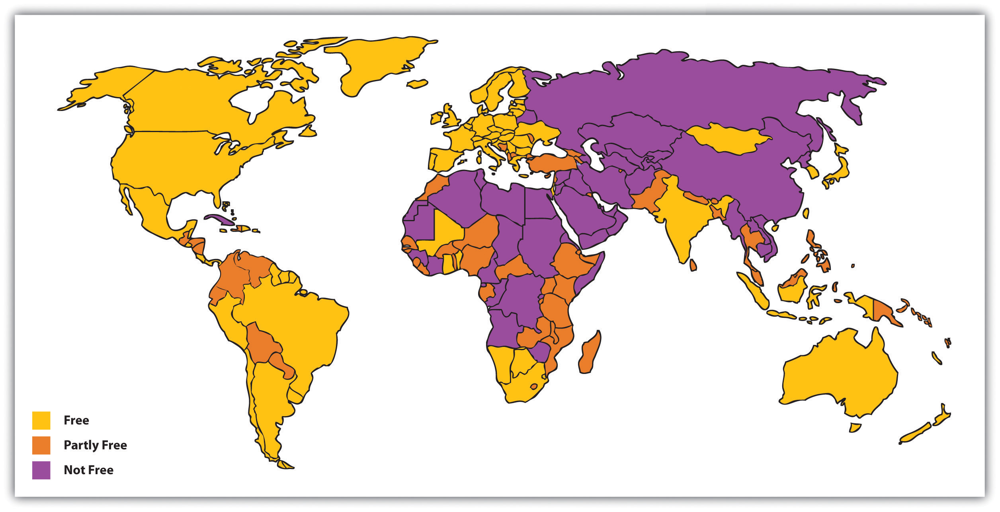

Various states and governments obviously exist around the world. In this context, stateThe political unit within which power and authority reside. means the political unit within which power and authority reside. This unit can be a whole nation or a subdivision within a nation. Thus the nations of the world are sometimes referred to as states (or nation-states), as are subdivisions within a nation, such as California, New York, and Texas in the United States. Government(a) The group of persons who direct the political affairs of a state; and (b) the type of rule by which a state is run. means the group of persons who direct the political affairs of a state, but it can also mean the type of rule by which a state is run. Another term for this second meaning of government is political systemThe type of rule by which a state is run., which we will use here along with government. The type of government under which people live has fundamental implications for their freedom, their welfare, and even their lives. Accordingly we briefly review the major political systems in the world today.
The type of government with which we are most familiar is democracyA political system in which citizens govern themselves either directly or indirectly., or a political system in which citizens govern themselves either directly or indirectly. The term democracy comes from Greek and means “rule of the people.” In Lincoln’s stirring words from the Gettysburg Address, democracy is “government of the people, by the people, for the people.” In direct (or pure) democracies, people make their own decisions about the policies and distribution of resources that affect them directly. An example of such a democracy in action is the New England town meeting, where the residents of a town meet once a year and vote on budgetary and other matters. However, such direct democracies are impractical when the number of people gets beyond a few hundred. Representative democracies are thus much more common. In these types of democracies, people elect officials to represent them in legislative votes on matters affecting the population.
Representative democracy is more practical than direct democracy in a society of any significant size, but political scientists cite another advantage of representative democracy. At least in theory, it ensures that the individuals who govern a society and in other ways help a society function are the individuals who have the appropriate talents, skills, and knowledge to do so. In this way of thinking, the masses of people are, overall, too uninformed, too uneducated, and too uninterested to run a society themselves. Representative democracy thus allows for “the cream to rise to the top” so that the people who actually govern a society are the most qualified to perform this essential task (Seward, 2010).Seward, M. (2010). The representative claim. New York, NY: Oxford University Press. Although this argument has much merit, it is also true that many of the individuals who do get elected to office turn out to be ineffective and/or corrupt. Regardless of our political orientations, Americans can think of many politicians to whom these labels apply, from presidents down to local officials. As we discuss in Chapter 14 "Politics and Government", Section 14.4 "Politics in the United States" in relation to political lobbying, elected officials may also be unduly influenced by campaign contributions from corporations and other special-interest groups. To the extent this influence occurs, representative democracy falls short of the ideals proclaimed by political theorists.
The defining feature of representative democracy is voting in elections. When the United States was established more than 230 years ago, most of the world’s governments were monarchies or other authoritarian regimes (discussed shortly). Like the colonists, people in these nations chafed under arbitrary power. The example of the American Revolution and the stirring words of its Declaration of Independence helped inspire the French Revolution of 1789 and other revolutions since, as people around the world have died in order to win the right to vote and to have political freedom.
Democracies are certainly not perfect. Their decision-making process can be quite slow and inefficient; as just mentioned, decisions may be made for special interests and not “for the people”; and, as we have seen in earlier chapters, pervasive inequalities of social class, race and ethnicity, gender, and age can exist. Moreover, in not all democracies have all people enjoyed the right to vote. In the United States, for example, African Americans could not vote until after the Civil War, with the passage of the 15th Amendment in 1870, and women did not win the right to vote until 1920, with the passage of the 19th Amendment.
In addition to generally enjoying the right to vote, people in democracies also have more freedom than those in other types of governments. Figure 14.1 "Freedom Around the World (Based on Extent of Political Rights and Civil Liberties)" depicts the nations of the world according to the extent of their political rights and civil liberties. The freest nations are found in North America, Western Europe, and certain other parts of the world, while the least free lie in Asia, the Middle East, and Africa.
Figure 14.1 Freedom Around the World (Based on Extent of Political Rights and Civil Liberties)
Source: Adapted from Freedom House. (2010). Map of freedom in the world. Retrieved from http://www.freedomhouse.org/template.cfm?page=363&year=2010.
MonarchyA political system in which power resides in a single family that rules from one generation to the next generation. is a political system in which power resides in a single family that rules from one generation to the next generation. The power the family enjoys is traditional authority, and many monarchs command respect because their subjects bestow this type of authority on them. Other monarchs, however, have ensured respect through arbitrary power and even terror. Royal families still rule today, but their power has declined from centuries ago. Today the Queen of England holds a largely ceremonial position, but her predecessors on the throne wielded much more power.

Queen Elizabeth II of England holds a largely ceremonial position, but earlier English monarchs held much more power.
This example reflects a historical change in types of monarchies from absolute monarchies to constitutional monarchies (Finer, 1997).Finer, S. E. (1997). The history of government from the earliest times. New York, NY: Oxford University Press. In absolute monarchies, the royal family claims a divine right to rule and exercises considerable power over their kingdom. Absolute monarchies were common in both ancient (e.g., Egypt) and medieval (e.g., England and China) times. In reality, the power of many absolute monarchs was not totally absolute, as kings and queens had to keep in mind the needs and desires of other powerful parties, including the clergy and nobility. Over time, absolute monarchies gave way to constitutional monarchies. In these monarchies, the royal family serves a symbolic and ceremonial role and enjoys little, if any, real power. Instead the executive and legislative branches of government—the prime minister and parliament in several nations—run the government, even if the royal family continues to command admiration and respect. Constitutional monarchies exist today in several nations, including Denmark, Great Britain, Norway, Spain, and Sweden.
Authoritarianism and totalitarianism are general terms for nondemocratic political systems ruled by an individual or a group of individuals who are not freely elected by their populations and who often exercise arbitrary power. To be more specific, authoritarianismPolitical systems in which an individual or a group of individuals holds power, restricts or prohibits popular participation in governance, and represses dissent. refers to political systems in which an individual or a group of individuals holds power, restricts or prohibits popular participation in governance, and represses dissent. TotalitarianismPolitical systems that are more repressive than authoritarianism because they try to regulate and control all aspects of citizens’ lives and fortunes. refers to political systems that include all the features of authoritarianism but are even more repressive as they try to regulate and control all aspects of citizens’ lives and fortunes. People can be imprisoned for deviating from acceptable practices or may even be killed if they dissent in the mildest of ways. The purple nations in Figure 14.1 "Freedom Around the World (Based on Extent of Political Rights and Civil Liberties)" are mostly totalitarian regimes, and the orange ones are authoritarian regimes.
Compared to democracies and monarchies, authoritarian and totalitarian governments are more unstable politically. The major reason for this is that these governments enjoy no legitimate authority. Instead their power rests on fear and repression. The populations of these governments do not willingly lend their obedience to their leaders and realize that their leaders are treating them very poorly; for both these reasons, they are more likely than populations in democratic states to want to rebel. Sometimes they do rebel, and if the rebellion becomes sufficiently massive and widespread, a revolution occurs. In contrast, populations in democratic states usually perceive that they are treated more or less fairly and, further, that they can change things they do not like through the electoral process. Seeing no need for revolution, they do not revolt.
Since World War II, which helped make the United States an international power, the United States has opposed some authoritarian and totalitarian regimes while supporting others. The Cold War pitted the United States and its allies against Communist nations, primarily the Soviet Union, China, Cuba, and North Korea. But at the same time the United States opposed these authoritarian governments, it supported many others, including those in Chile, Guatemala, and South Vietnam, that repressed and even murdered their own citizens who dared to engage in the kind of dissent constitutionally protected in the United States (Sullivan, 2008).Sullivan, M. (2008). American adventurism abroad: Invasions, interventions, and regime changes since World War II (Rev. and expanded ed.). Malden, MA: Blackwell. Earlier in U.S. history, the federal and state governments repressed dissent by passing legislation that prohibited criticism of World War I and then by imprisoning citizens who criticized that war (Goldstein, 2001).Goldstein, R. J. (2001). Political repression in modern America from 1870 to 1976 (Rev. ed.). Urbana: University of Illinois Press. During the 1960s and 1970s, the FBI, the CIA, and other federal agencies spied on tens of thousands of citizens who engaged in dissent protected by the First Amendment (Cunningham, 2004).Cunningham, D. (2004). There’s something happening here: The new left, the Klan, and FBI counterintelligence. Berkeley: University of California Press. While the United States remains a beacon of freedom and hope to much of the world’s peoples, its own support for repression in the recent and more distant past suggests that eternal vigilance is needed to ensure that “liberty and justice for all” is not just an empty slogan.